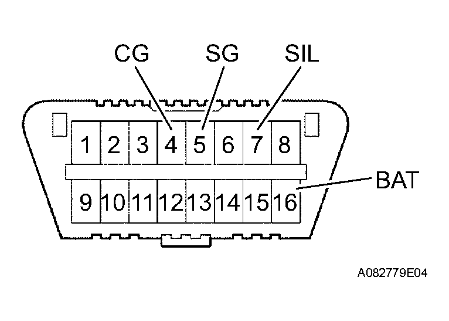

Diagnosis System (2005/07-2005/12)
- CHECK DLC3

Courtesy of © TOYOTA, LICENSE AGREEMENT TMS1002DLC3 TERMINAL DESCRIPTION AND SPECIFIED CONDITIONSSymbols (Terminal No.) Terminal Description Condition Specified Condition SIL (7) - SG (5) Bus "+" line During transmission Pulse generation BAT (16) - Body ground Battery positive Always 10 to 14 V CG (4) - Body ground Chassis ground Below 1 Ω SG (5) - Body ground Signal ground If the result is not as specified, the DLC3 may have a malfunction. Repair or replace the harness and connector.
HINT:
Connect the cable of the intelligent tester (with CAN VIM) to the DLC3, turn the ignition switch ON and attempt to use the tester. If the screen displays the message UNABLE TO CONNECT TO VEHICLE, there is a problem either with the vehicle or with the tester.
- If communication is normal when the tester is connected to another vehicle, inspect the DLC3 of the original vehicle.
- If communication is still not possible when the tester is connected to another vehicle, the problem may be in the tester itself. Consult the Service Department listed in the tester's instruction manual.
- SYMPTOM SIMULATION
HINT:
The most difficult case in troubleshooting is when no symptoms occur. In such cases, a thorough customer problem analysis must be carried out. Then the same or similar conditions and environment in which the problem occurred in the customer's vehicle should be simulated. No matter how experienced or skilled a technician may be, if he proceeds to troubleshoot without confirming the problem symptoms, he will likely overlook something important and make a wrong guess at some points in the repair operation. This leads to a standstill in troubleshooting.
- Vibration method: When vibration seems to be the major cause.
HINT:
Perform the simulation method only during the primary check period (for approximately 6 seconds after the ignition switch is turned to the ON position).
- Slightly vibrate the part of the sensor considered to be the problem cause with your fingers and check whether the malfunction occurs.
HINT:
Shaking the relays too strongly may result in open relays.
- Slightly shake the connector vertically and horizontally.
- Slightly shake the wire harness vertically and horizontally. The connector joint and fulcrum of the vibration are the major areas to be checked thoroughly.
- Slightly vibrate the part of the sensor considered to be the problem cause with your fingers and check whether the malfunction occurs.
- Vibration method: When vibration seems to be the major cause.
- FUNCTION OF SRS LIGHT
- Primary check
- Turn the ignition switch to the LOCK position. Wait for at least 2 seconds, then turn the ignition switch to the ON position. The SRS warning light comes on for approximately 6 seconds and the SRS airbag system diagnosis (including the seat belt) is performed.
HINT:
If trouble is detected during the primary check, the SRS warning light remains on even after the primary check period (approximately 6 seconds) has elapsed.
- Turn the ignition switch to the LOCK position. Wait for at least 2 seconds, then turn the ignition switch to the ON position. The SRS warning light comes on for approximately 6 seconds and the SRS airbag system diagnosis (including the seat belt) is performed.
- Constant check
- After the primary check, the center airbag sensor assembly constantly monitors the SRS airbag system for trouble.
HINT:
If trouble is detected during the constant check, the center airbag sensor assembly functions as follows:
- The SRS warning light comes on or blinks.
- The SRS warning light comes on, and then goes off. This blinking pattern indicates the source voltage drop.
- The SRS warning light goes off 10 seconds after the source voltage returns to normal.
- After the primary check, the center airbag sensor assembly constantly monitors the SRS airbag system for trouble.
- Review
- When the airbag system is normal:
The SRS warning light comes on only during the primary check period (for approximately 6 seconds after the ignition switch is turned to the ON position).
- When the airbag system has trouble:
- The SRS warning light remains on or blinks even after the primary check period has elapsed.
- The SRS warning light goes off after the primary check, but comes on or blinks again during the constant check.
- The SRS warning light does not come on when turning the ignition switch from the LOCK to ON position.
HINT:
The center airbag sensor assembly keeps the SRS warning light on if the airbag has been deployed.
- When the airbag system is normal:
- Primary check
- SRS WARNING LIGHT CHECK
- Turn the ignition switch to the ON position, and check that the SRS warning light comes on for approximately 6 seconds (primary check).
- Check that the SRS warning light goes off approximately 6 seconds after the ignition switch is turned to the ON position (constant check).
HINT:
When any of the following symptoms occur, refer to the PROBLEM SYMPTOMS TABLE .
- When the SRS warning light comes on occasionally even after the primary check period has elapsed, an open or short in the SRS warning light circuit is suspected.
- When the SRS warning light comes on even when the ignition switch is in the LOCK position, trouble in the power source or combination meter assembly is suspected.
- When the ignition switch is turned from the LOCK to ON position, the SRS warning light does not come on.